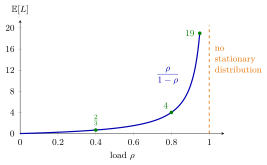

M/M/1 Queue¶
Definition¶
In Kendall's notation, the queue has Poisson arrivals with rate , independent exponential service times with rate , one server and unlimited waiting room; waiting-time results assume first-come first-served (FCFS). It is the birth-death queue with
and its load is . If , the stationary-probability recursion gives the stationary distribution
Interpretation¶
The queue is the simplest queue with randomness in both arrivals and service, and the one in which every performance measure has a short formula: the number in the system is geometric with parameter . It serves as the benchmark against which the effect of extra servers, blocking or less variable service is measured.

The curve is . The marked points are at , at and at , Riley's single oven. Doubling the load from to multiplies the mean number in the system by six, and the curve has no bound as .
The condition makes the normalizing sum , a geometric series, finite; for there is no stationary distribution. Exponential service makes by the memoryless property, and Poisson arrivals give PASTA, so an arriving job finds jobs with probability and waits not at all with probability . In the zero-based convention of Probability Theory, (the geometric distribution counts failures before the first success).
Two slips recur. is not ; is the mean number in service. And , not , because an empty system has an empty queue. The Pollaczek-Khinchine formula of Week 5 extends the waiting-time result to general service times.
Key Results¶
- for when (equation 5.1.1).
- , , and (equations 5.1.2 and 5.1.3).
- , obtained from the moment generating function for (Exercise 5.1.8).
- Load equals utilization, since every job is accepted and served.
- By Little's law: and .
- Under FCFS, and has density for (equation 4.6.13), so .
- Sizing rule of Section 5.2: one server working as fast as servers meets when , that is, .
Examples¶
1. A single desk. Customers arrive at per hour and service takes on average 4 minutes, so per hour and . Then , , hours minutes and hours minutes. The fraction of time with more than three customers present is , and the probability of waiting longer than 10 minutes is . At half the arrival rate, and : halving the load divides congestion by six, not by two.
2. The town hall (Exercise 5.2.6). Measurements give per minute and minutes. Little's law gives . With , the waiting-time formula becomes , that is, , so
Hence per minute and . With seats, all waiting customers can sit when , which has probability . The requirement first holds at (, while gives ). So many seats signal that a second employee is the better advice.
3. Sizing a call centre (Section 5.2). Calls arrive at per hour and take minutes, so . Treating agents as one server that works times as fast, the target requires , so and 4 agents are needed in that hour. This is an approximation: separate agents form an queue, not one fast server.
Prerequisites¶
Related Concepts¶
- M/M/c Queue
- M/M/1/K Queue
- M/M/Infinity Queue
- Server Load
- Waiting Time
- Sojourn Time
- Pollaczek-Khinchine Formula
- Sakasegawa's Formula
Sources¶
- Stochastic Operations Research · Week 4
- N. D. van Foreest, Sample Path Analysis and Simulation of Stochastic Systems, Sections 5.1 and 5.2
Aliases: M/M/1, MM1 queue, single-server Markovian queue, M/M/1 model, single-server queue with Poisson arrivals and exponential service Keywords: p(n) = (1-\rho)\rho^n, \mathbb{E}[L] = \rho/(1-\rho), \mathbb{E}[Q] = \rho^2/(1-\rho), \mathbb{P}(L>n) = \rho^{n+1}, \rho = \lambda/\mu, geometric queue length, waiting-time distribution, load, utilization Symbols: lambda, mu, rho, square root, sum
Last updated: 29 October 2026 20:42
M/M/1 QueueJackson Product FormM/M/1/K QueueM/M/c QueueOpen Queueing NetworkTandem QueueBirth-Death QueuePoisson Arrivals See Time AveragesLittle's LawGeometric DistributionM/M/Infinity QueueServer LoadWaiting TimeSojourn TimePollaczek-Khinchine FormulaSakasegawa's Formula